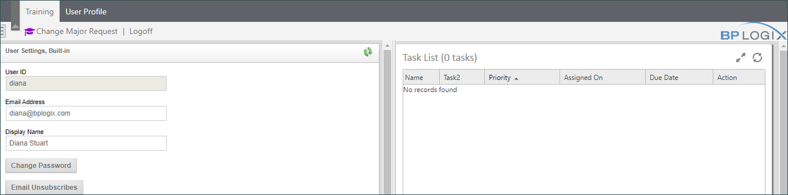

|
|
Lesson Contents | In this Lesson, we will discuss the common Process Director user interface elements to familiarize you with the product. |
Before we begin looking at a sample project, and taking a dive into implementation, let's first get some familiarity with the user interface we'll be working with over the course of our training.
Process Director’s web interface provides a navigation system at the top of the browser, containing entries that will take users into various components of Process Director. After the initial installation of Process Director you will see a very simple navigation scheme displayed.

A workspace is a user-defined section of the Process Director interface where related tasks or functions can be grouped. The navigation scheme is separated into two workspaces: the Admin Profile workspace and the User profile workspace.
In the default installation, the Admin Profile workspace provides administrative users with buttons that enable the user to navigate to the various user and system administrative functions. The User Profile workspace enables access to the user's task list and standard Knowledge Views.
The basic navigation scheme will be expanded through creating new workspaces for different users in the administration section of the Process Director interface. Throughout this guide, you may see screenshots from various installations that have a number of different workspace navigation schemes. The navigation schemes for your particular installation will be quite different once you start implementing the workspaces that are relevant to your processes. For instance, our training workspace provides an interface that is specific to this training course.

To refresh any of the pages, in the Content List, use the refresh icon on the upper right corner of the navigation browser. Do not use the browser’s default refresh button (e.g., F5 Refresh ), which will return you to the Home Page.

Use the properties Icon in the upper right corner of the navigation browser to open the properties page for the current folder.

Use the separator icon located in the vertical bar separating the navigation and content portlets to minimize or maximize the navigation portlet. To restore (redisplay) the navigation bar, click on the same icon.

When you select a workspace, a menu bar will appear below the workspace that displays the different functions that are accessible in each workspace. Figure 1, above, shows the menu bar that is available in the Admin Profile workspace.
Each menu item will, when clicked, direct you to a different screen in the workspace. Each screen may consist of one of the following items:
The Content List displays all of the folders and files that are created in Process Director, or uploaded into Process Director as content. The Content List is a hierarchical list of all Process Director objects. The Content List includes all of the objects created in Process Director, such as Forms, Process Timelines, Knowledge Views, etc. In addition, the Content List can include uploaded files such as Excel spreadsheets used to import data, Word documents used as templates for output documents, and other files that become part of a process definition.
The Content List consists of a file structure that is located on the left side of the screen, and a file listing that is displayed on the right side of the screen. Navigation through the Content List is done by clicking on a folder on either side of the screen.
Many users think of the Content List as a file system that users can create inside of Process Director, but this isn't really correct. The Content List organizes Process Director objects in a logical fashion for users who are browsing through the system, but the actual objects in Process Director are not really organized in the way that the Content List displays.
As a process designer/implementer, the vast majority of your time will be spent using the Content List section of the Process Director interface, so it is important that you are familiar with its operation.